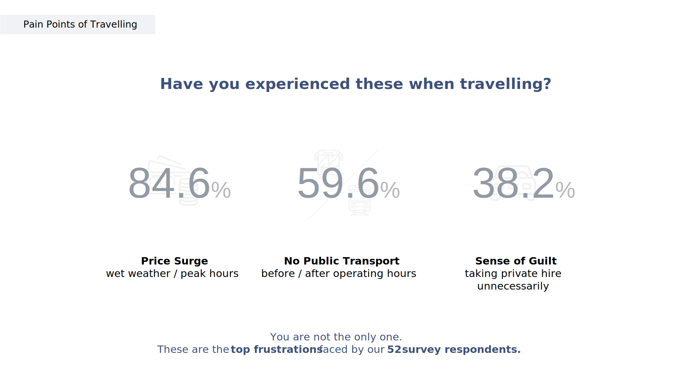
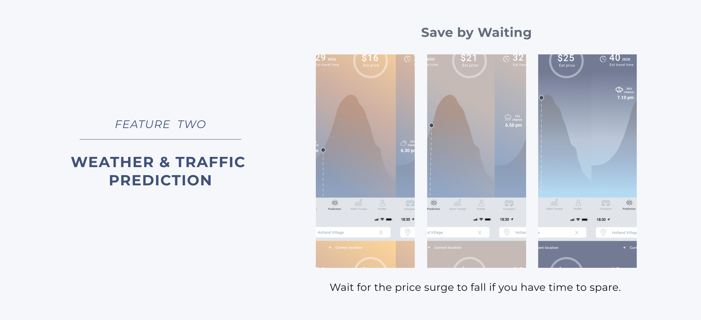
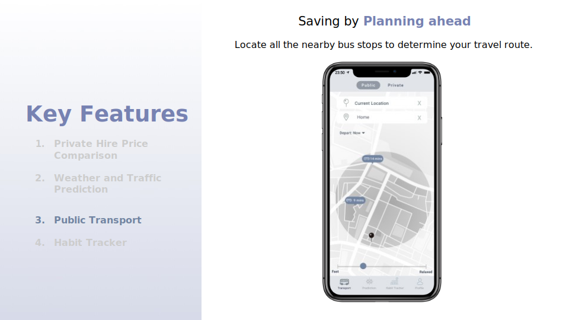
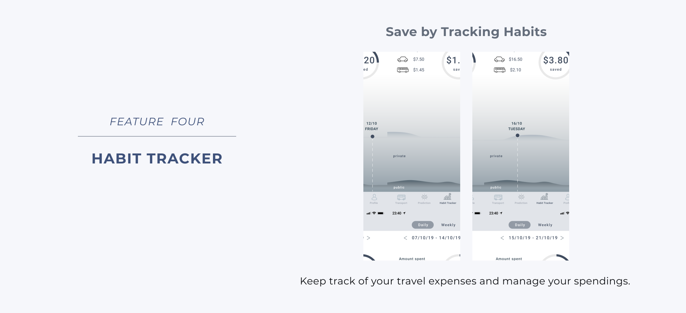
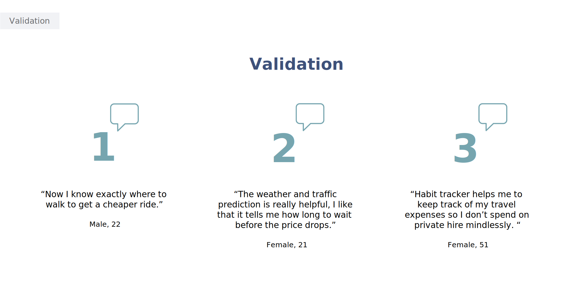
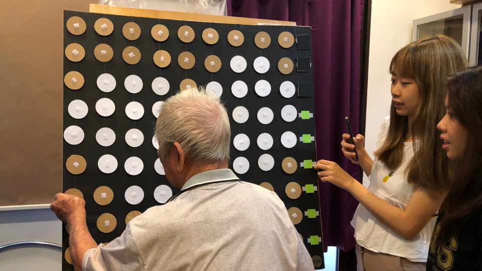

Portfolio

Move
A transport mobile application that provides a seamless travelling experience for price sensitive travellers by streamlining their decision-making process through integrating various sets of data.
Project overview
This project prompts designers to make meaningful use of data to improve everyday lives of people. Specifically, designers look into the open data available and use them as design materials.
My team lotioked into the common frustrations faced by people when travelling from one place to another, analysed the data available for use and brainstormed for features that would improve their travelling experience.
Problem
Transportation is an integral part of our life, but it is not uncommon to encounter various frustrations when travelling. Private hire price surges on rainy days and during rush hour as well as the lack of public transportation after midnight are examples.
Design objective
To design a seamless travelling experience for price sensitive travellers by streamlining their decision-making process through integrating various sets of data.
Quantitative and qualitative survey
A survey was conducted to find out the pain points faced by users.
The team also gathered insights on the ways users are willing to take to save money on travelling.

Below are the relevant data identified for our solution.

We then created paper prototype to test with users and also conducted a co-design workshop to further explore other possibilities in our proposed solution.
Co-design workshop


Final concept
Move is a mobile application that integrates data to improve the decision-making process of price sensitive travellers. It compares prices across private hire companies and locates nearby pick-up points offering cheaper rides. The app also uses weather and traffic data to identify price fluctuations and uses users’ travel expenses to give insight into their travel habits.
  Concept validation
Tikam
Redesign of a rehabilitative device to increase patients' engagement
and enjoyment while on a rehabilitation journey
Project overview
This project is in partnership with AWWA, a social service agency, to redesign existing rehabilitative devices at the Rehab and Day Care Centre for a more enjoyable and effective rehabilitation journey. Specifically, my team worked on redesigning the Checkerboard, a rehabilitative device used to promote functional standing balance.
Problem
Existing rehabilitative devices focus on restoring mobility and function of patients. However, the activities planned by the therapists have a tendency to become monotonous overtime, resulting in loss of interest and engagement among patients. This in turn lead to caregivers and therapists having to put in continuous efforts to encourage and motivate patients to participate in the rehabilitation program.
Design objective
To redesign a rehabilitative device that provides an engaging and self-guided rehabilitation experience, as well as promotes functional standing balance which includes static balance, forearm range-of-motion and visual scanning abilities.
Ideation
To guide us in our ideation process, we came up with a list of therapy assessment criteria that would determine the level of difficulty of the activity and gamification techniques that would help to increase participant interest and provide a positive rehabilitation experience.
Initial idea 1
Patients are to flip over the modules to guess the picture formed. The difficulty level of the activity is determined by repetition.
User test observations
User test insights
Initial idea 2
A narrative around collecting money and purchasing items is introduced as this is a familiar situation for patients. The patient's goal is to flip and find as many green coloured modules to raise money and purchase items for his home. A red coloured module indicates a loss of money and the counter will deduct accordingly to inform users the amount of money collected. Once the target amount has been raised, the game is completed. The difficulty level of the activity is determined by area of reach.
User test observations
User test insights
Final concept
The name of our final concept, Tikam, means guess in Singlish. Upon selection of the difficulty level, 6 randomly generated number will be shown at the bottom of the device. The goal of the activity is to find all the numbers by flipping over the modules. The difficulty level of the activity is determined by the area of reach.
To ensure that patients are clear on the playing area which depends on the difficulty level, modules within the playing area will be lit up.
When a number has been found, clear feedback is also given to patients by having a border lit up around the number.
Final user test
Validation

Assisi Fun Day 2021
Designing the user experience of a virtual canival.

Project overview
Assisi Fun Day is an annual fundraising carnival organised by Assisi Hospice. Since the global pandemic, the annual physical event has turned into a virtual one due to the safety measures put in place.
Design objective
The design objectives for this project include increasing outreach and engagement with the public and raising fund for the patients under palliative care.
Design challenge
To design a seamless user experience while providing various fun and interactive features such as online carnival games, lucky draw, virtual photo booth, livestream content and e-commerce.

- Client: Finish
- Category: Identity